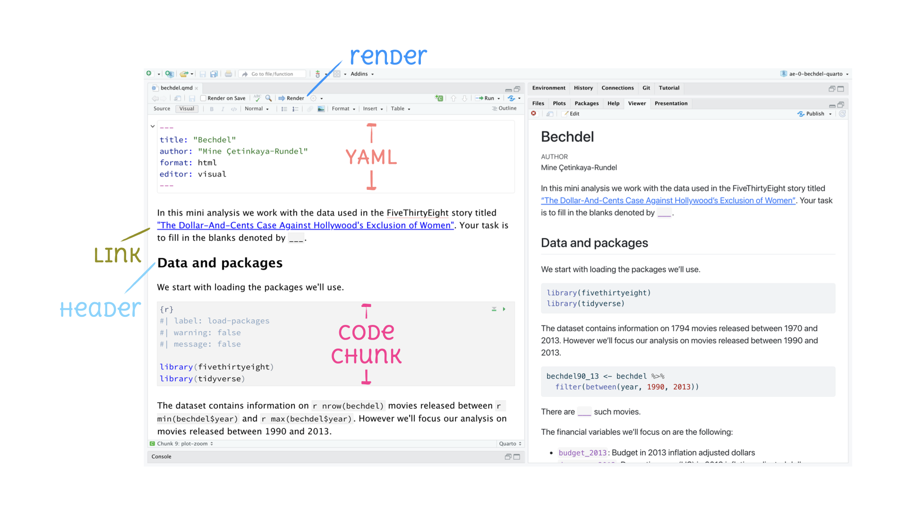

Meet the Toolkit
R for Data Analysis
Session 1
What will you learn in this class

Class technology

Visualization Examples

R and RStudio

- R is an open-source statistical programming language
- R is also an environment for statistical computing and graphics
- It’s easily extensible with packages

- RStudio is a convenient interface for R called an IDE (integrated development environment), e.g. “I write R code in the RStudio IDE”
- RStudio is not a requirement for programming with R, but it’s very commonly used by R programmers and data scientists
R and RStudio

Packages in R

Packages in R

tidyverse

- The tidyverse is an opinionated collection of R packages designed for data science
- All packages share an underlying philosophy and a common grammar
Git and GitHub

Git is a version control system, like “Track Changes” features from Microsoft Word but more powerful.

GitHub is the home for your Git-based projects on the internet, like Dropbox but much better.
Why git?

GitHub Workflow

Tour: Quarto
